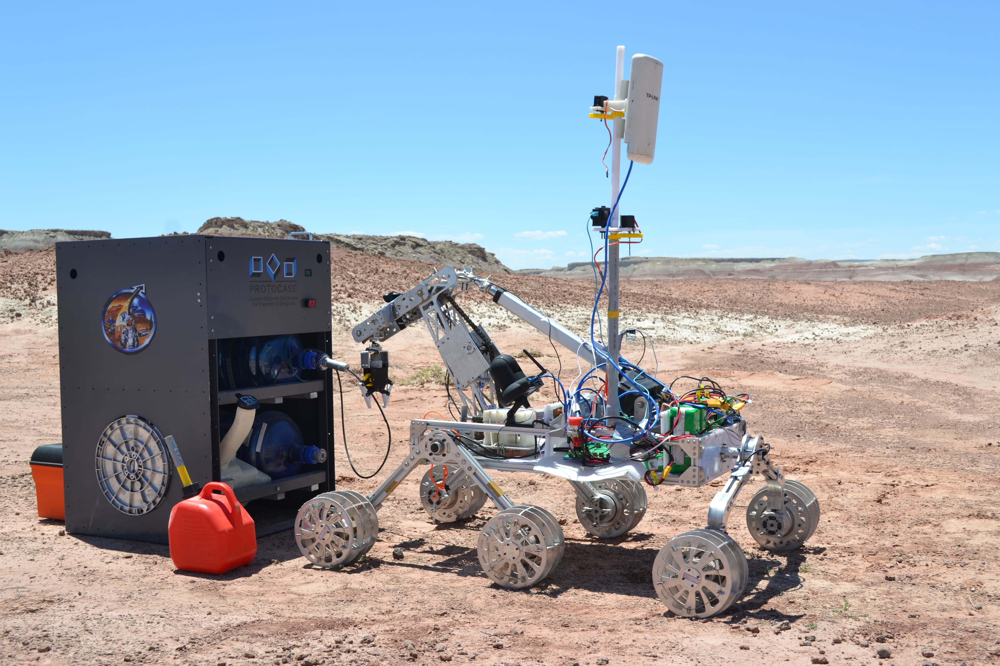
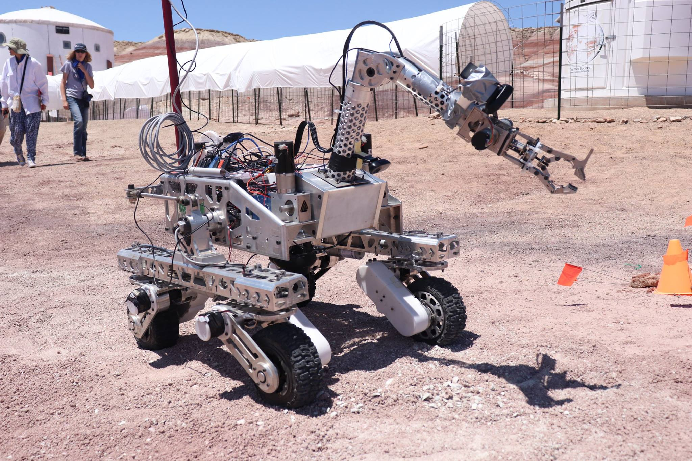
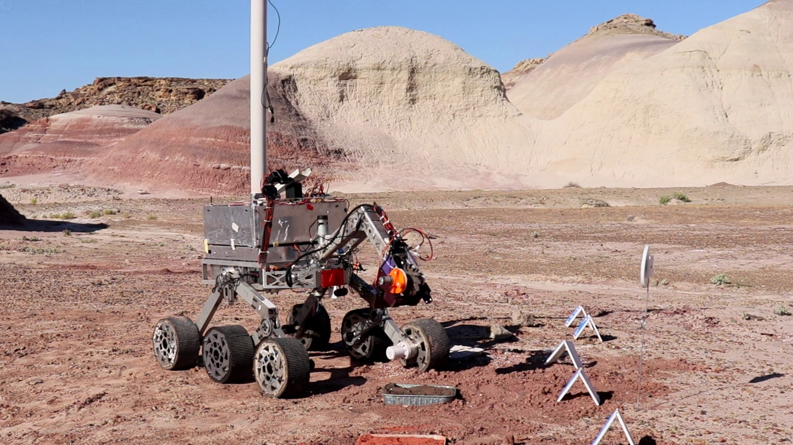
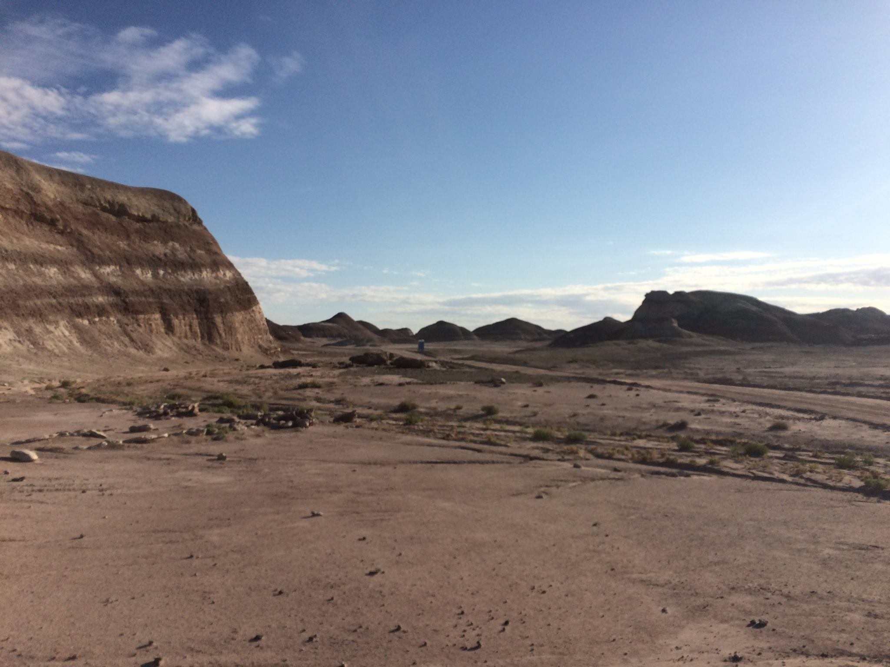
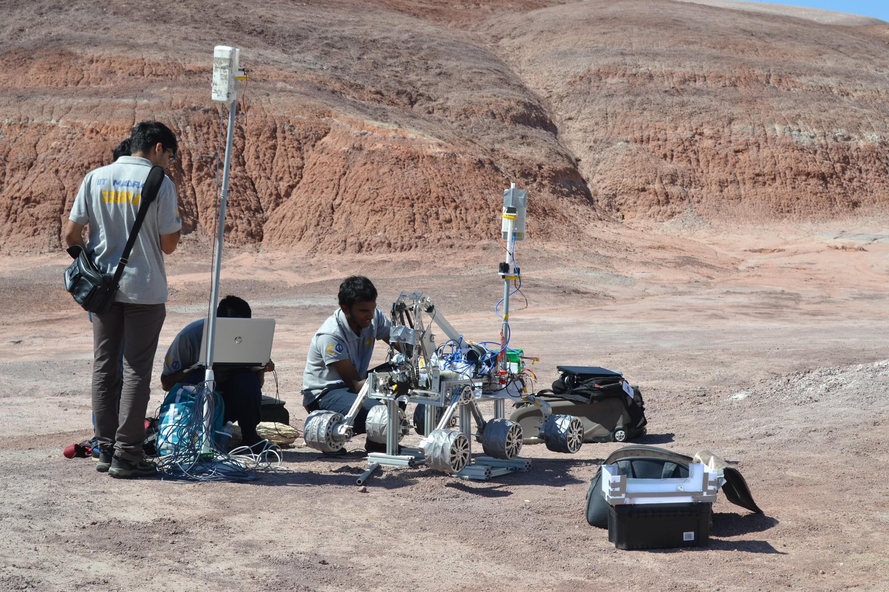
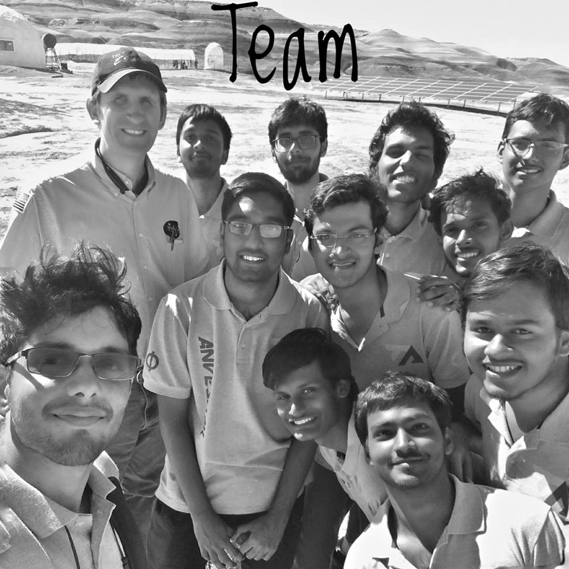
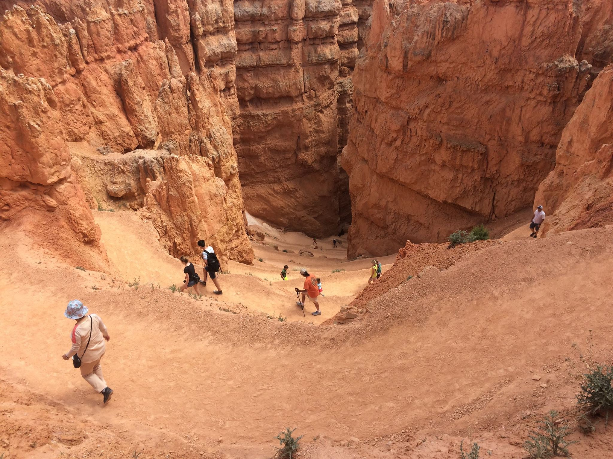

Team Anveshak
My Work | | Links:

Team Anveshak is a highly motivated group of students from IIT Madras striving to compete against the best student teams at international competition called University Rover Challenge (URC) conducted by Mars Society at Utah, USA. Each year we design, develop and rigorously test our Mars rovers to endure and perform in the harshest conditions of terrain and atmosphere. I have served as an active member for more than two years and headed the entire contingent for URC 2018.
Electronics module
November 2016
Initially, I was recruited as a Mechatronics Engineer to work on design and control of robotic manipulator on the rover. After reorganization of the team structure, I was assigned with embedded design for Chassis and corresponding programming for rover’s locomotion. I spent majority of my time in designing and testing the rugged electronics circuits for applications like voltage regulation or optical isolation (optocouplers), power circuits for relay/MOSFET based kill switches, Battery management sytems (BMS) for remote monitoring and control of power system, Main control board for interfacing motor drivers, microcontrollers with Raspbery Pi or Single Board Computers (SBC) like Ordroid or Motherboards with Intel processors. PCB design was done using Autodesk Eagle software.
Subsequently, I worked on programming microcontrollers like Arduino or STM to implement closed loop control of motor position, speed using motordrivers. I scripted Python codes for joystick based manual control of 6 wheel differential drive or 4 wheel differential drive with steering with PID speed control loops using optical encoder feedback. Similarly, I was involved with embedded design and programming for Digger or other auxilary modules like camera pan/tilt or long distance communication with TP Link antennas. This phase of work helped me learn basic electical engineering, electronics, embedded or communication concepts essential for robotics, power electronics, PCB design, arduino and socket programming and linear control theory.
Software module
April 2017
Python scripts to control multiple subsystems of rover remotely was prone to communication failures or performance issues. We quickly exported all the software stack to Robot Operating Systems (ROS) to exploit the advantages of ROS framework. During this phase, I developed ROS meta packages for locomotion and digger unit control using joystick. Deploying and testing the codes on multiple platforms, harware architectures for different applications every single day during prototyping phase was an important experience teaching me lessons of perseverance.
In a later period, I was involved with software development for autonomous traversal task. Sensor fusion algorithms like EKF, complimentary filter were tested for combining wheel odometry, GPS and IMU data. Completely using ROS navigation stack for GPS based autonomous task proved to be computationally very expensive leading to processing and power overload issues. We implemented simple bearing based planning using C++ scripts with ROS wrappers for processing Lidar or camera feed for obstacle avoidance. For marker (tennis ball) detection, we tried simple computer vision algorithms based on thresholding and countour detection which underperformed under extremely bright conditions of Mars Desert Research Station (MDRS) in Utah USA. Consequently, we shifted to deep learning methods achieving marker detection from distances as large as 5 metres with high resolution USB camera feed.
Head, Electronics and Software
August 2017
After working as member in Electronics and Software modules, I rose to the position of Technical Lead for these two modules. I worked closely with the newer team members to develop compact and safer PCBs while reducing electronic setup time. We cleaned and reorganized code base to reduce ambuguity. I empasized on documenting every minute detail of hardware and software for future reference which proved to very useful over the next few years. An important change is instituting a new team structure and combining Electronics and Software module making the work more interesting and engaging for the every member of both modules. This change increased team’s productivity and collaborations between individual members, as a result, team’s morale invigorated.
Head, Team Anveshak
August 2017
In this position, I was responsible to manage a team of more than 20 members and direct them to secure during July’17 - July’18 to secure 25th rank from amongst 95 teams from all over the world at University Rover Challenge 2018. I spearheaded the functions of finance and budgeting, project and team management, logistics and travel for URC’18 contingent. I have written technical reports and helped the team with video editing for Crictical Design Review (CDR) of URC 2018. My substantial contribution as a part of this responsiblty was to raise funds for team through corporate sponsorship and crowdsourcing. I streamlined product deals from Polulu, Autodesk Fusion 360 and other vendors or corporates. Furthermore, I convinced Salt Lake Express to provide an additional 10% discount on charter service in USA.
Senior Member
August 2018
I have been actively involved with mentoring the newer team members and leaders. My brief stint with manipulator design teams was a refreshing experience and helped me recollect my design concepts and CAD skills, and become a better mechanical engineer. Being part of the teams for more than two years shaped me into a robotics enthusiast and paved way for my deep interest in Control and Robotics research. The team groomed me into a better team player, leader, manager and engineer. More importantly, the team served as a platform to connect with like minded people, develop deep rooted friendships which later transformed into a family.
Rovers
Aurora (URC 2017)

Badger (URC 2018)

Ceaser (URC 2019)

Highlights of my trip to Utah for URC 17
The majestic MDRS at Hanskville, UT USA

Setting up Aurora before a competition task

URC 2018 Contingent

Trip to Gryce Canyon National Park

Rover Videos
URC 2017 Crictical Design Review (CDR)
URC 2018 System Acceptance Review (SAR)
URC 2019 System Acceptance Review (SAR)
Ceaser at MDRS, Hanksville in URC 2019
For further information, please visit the team’s website here